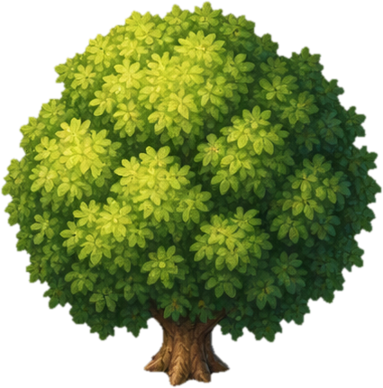

ทดลอง Code Animation — ต้นไม้จาก Asset จริง
ใช้ภาพ assets/village-town/nature/tree-round.png ที่มีอยู่ใน Repo เดิม เปรียบเทียบภาพนิ่งกับการขยับด้วยโค้ด
① ต้นฉบับ — ไม่ขยับ

ไฟล์ภาพเดิม ไม่มีการแก้ไข Asset
② Code Motion — ทดลองขยับส่วนพุ่ม
วางภาพเดิมซ้อนกัน แล้วขยับเฉพาะส่วนบนด้วย CSS; โคนต้นยังนิ่ง
กำลังใช้ภาพต้นไม้เดิมจาก Repo · ตัวอย่างนี้เป็นหน้าเดโมแยก ไม่ได้เปลี่ยนฉากเกม